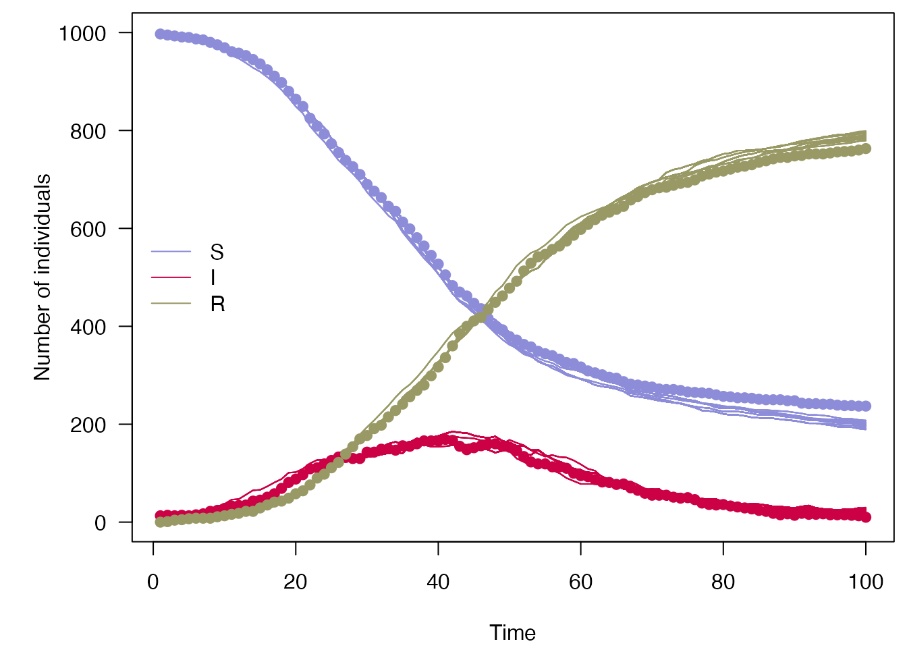
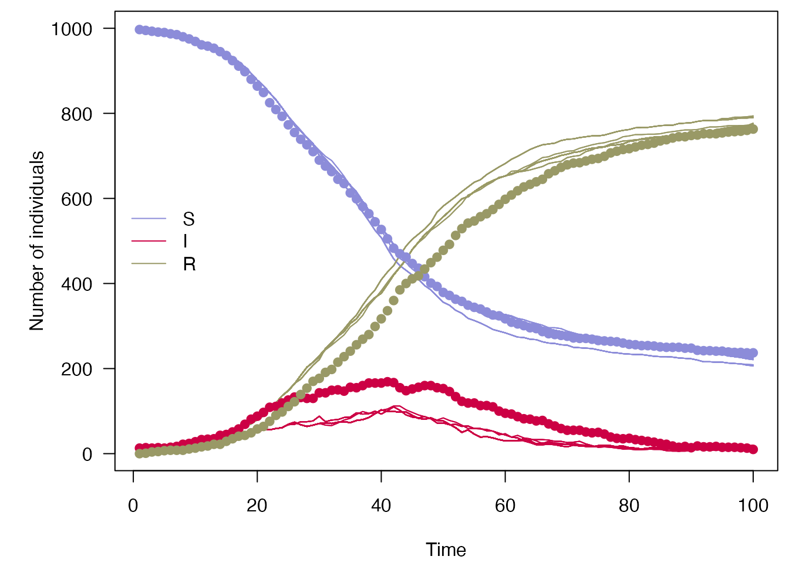
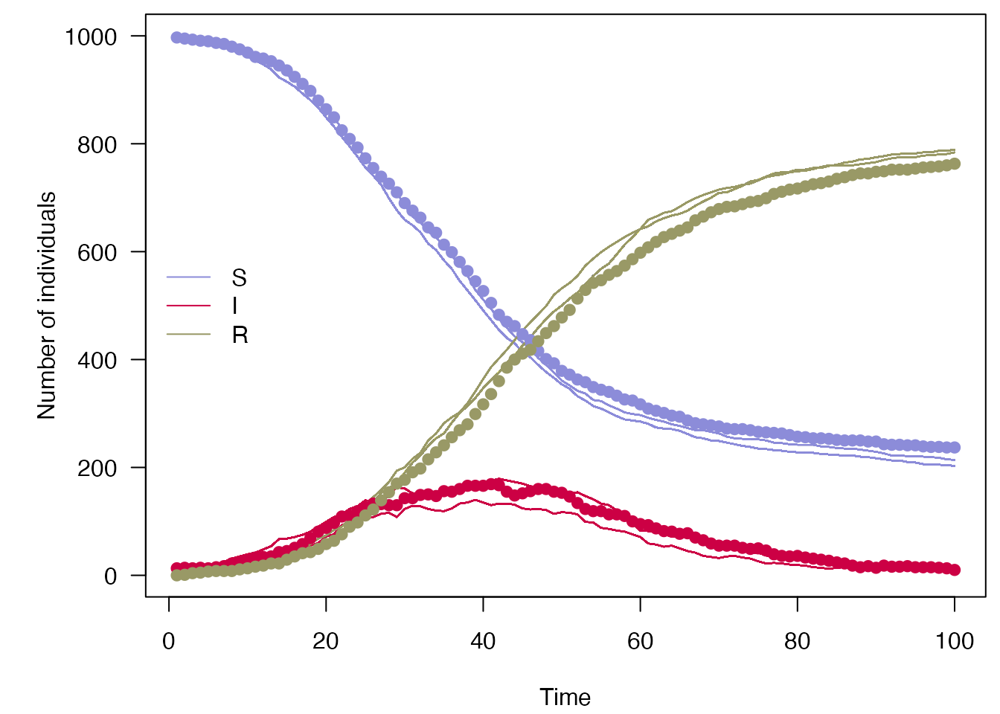
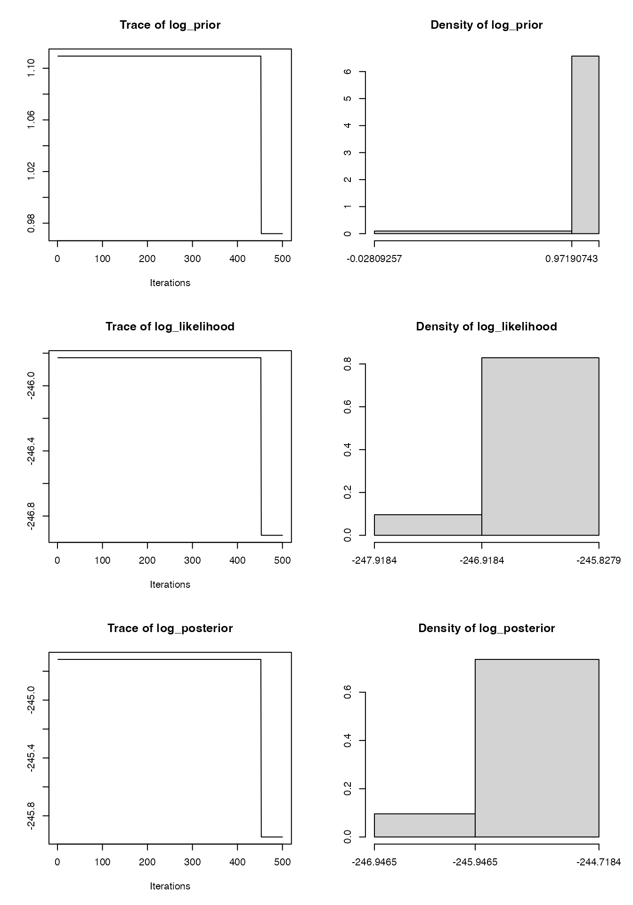
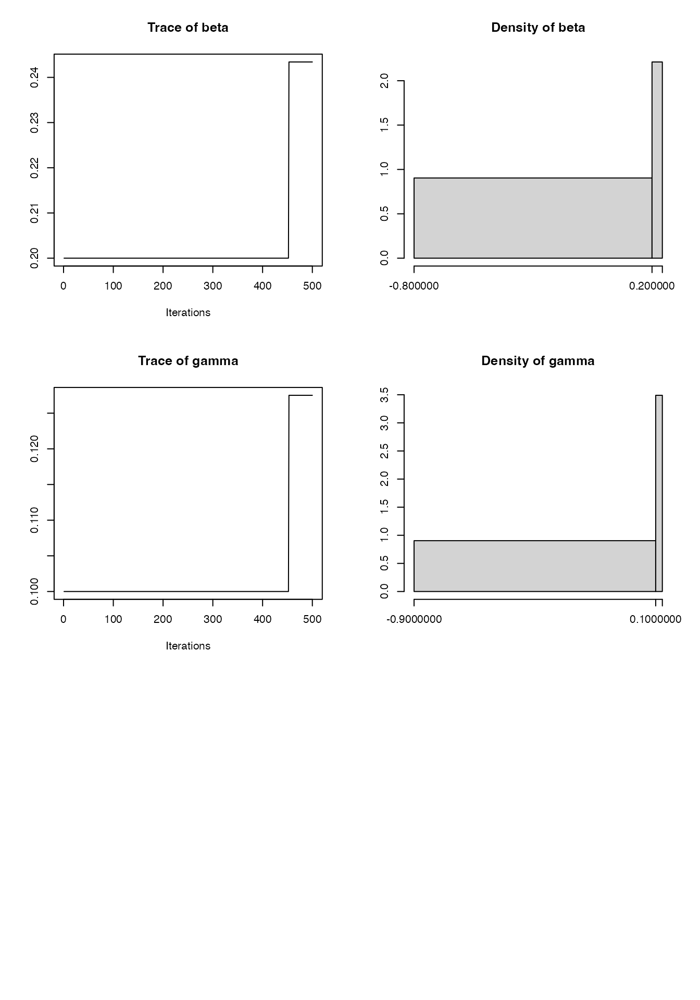

mcstate sits at the top of a stack of packages, which together allow inference of a stochastic model’s parameters by fitting to a time-series of observational data. To use mcstate, we require the following pieces:
- A generative model for a state-space process, implemented in
dust. This will generate (stochastic) updates of the state at each time step. - A time-series of observed data, which may include from multiple sources (e.g. cases, hospital beds, deaths).
- A comparison function, which calculates the likelihood of a model state, given the observed data.
- Optionally an index function, which identifies the indices of the state used to compute the comparison. This is particularly useful when the state space is large, and only a small number of states are used in the comparison function.
Below we describe a typical use case for infectious disease: given daily case counts during an epidemic, how can we estimate key features of the transmission process such as the transmission rate, recovery rate and from these the basic reproductive number \(R_0\).
Stochastic SIR model definition
A simple definition of the SIR model, as given in the odin documentation is: \[\begin{align*} \frac{dS}{dt} &= -\beta \frac{SI}{N} \\ \frac{dI}{dt} &= \beta \frac{SI}{N} - \gamma I \\ \frac{dR}{dt} &= \gamma I \\ \end{align*}\] \(S\) is the number of susceptibles, \(I\) is the number of infected and \(R\) is the number recovered; the total population size \(N = S + I + R\) is constant. \(\beta\) is the infection rate, \(\gamma\) is the recovery rate.
Discretising this model in time steps of width \(dt\) gives the following update equations for each time step:
\[\begin{align*} S_{t+1} &= S_t - n_{SI} \\ I_{t+1} &= I_t + n_{SI} - n_{IR} \\ R_{t+1} &= R_t + n_{IR} \end{align*}\]
where \[\begin{align*} n_{SI} &\sim B(S, 1 - e^{-\beta \frac{I}{N} \cdot dt}) \\ n_{IR} &\sim B(I, 1 - e^{-\gamma \cdot dt}) \end{align*}\]
This example is included with the dust package, and can be loaded with:
gen_sir <- dust::dust_example("sir")To learn how to implement this yourself, see the vignette over at odin.dust.
Inferring parameters with mcstate
Typically these models will be used in conjunction with observed data to infer the highest posterior density values for model parameters, most likely trajectories up to the present (nowcast), and make forecasts using these parameters. The mcstate package implements particle filter and pMCMC methods to make all of this this possible from dust models.
A comparison function is needed to define a likelihood, i.e. the probability of observing this trajectory, given the data. This is combined with a prior to generate a posterior distribution for each parameter, which in the SIR model gives the distribution of likely values for \(\beta\) and \(\gamma\).
This is straightforward for a deterministic model, but for a stochastic model over a long time-series, trajectories can quickly become inconsistent with the data, and the massive space of potential outcomes makes downstream sampling highly inefficient. mcstate therefore implements a particle filter, also known as sequential Monte Carlo (SMC), which runs multiple trajectories, and at each stage where data is available resamples them in proportion to their likelihood, keeping only those trajectories close to the data, and with likelihoods that are plausibly important parts of the posterior. Importantly, this technique produces an unbiased estimate of the likelihood for a given set of parameters.
The anatomy of an mcstate particle filter, as noted above, consists of three main components:
- A set of observations to fit the model to, generated using
mcstate::particle_filter_data(). - A model to fit, which must be a dust generator, either
dust::dust()orodin.dust::odin_dust(). - A comparison function, which is an R function which calculates the likelihood of the state given the data at one time point.
Model data
To demonstrate this, we will attempt to infer the parameters \(\beta\) and \(\gamma\) using daily case counts. In reality these counts would be measured, but here we have generated them from a single run of the model with seed = 2L, and added some constant noise proportional to the epidemic size:
incidence <- read.csv(system.file("sir_incidence.csv", package = "mcstate"))This can then be processed with mcstate::particle_filter_data() as follows, taking four update steps between every observation so that rate = 4. Generally increasing the rate will improve resolution, especially if rates of change between partitions are high, though at the expense of extra computation time. We also define a time interval between each update \(dt = \frac{1}{\mathrm(rate)}\):
dt <- 0.25
sir_data <- mcstate::particle_filter_data(data = incidence,
time = "day",
rate = 1 / dt)
rmarkdown::paged_table(sir_data)
plot(incidence$day, incidence$cases,
type = "l", xlab = "Day", ylab = "New cases")More complex models may have additional data streams added as further columns (e.g. deaths, hospital admissions). This will be fed as observed data to the compare function, which will combine and compute the evidence for the current model state.
Defining the comparison function
The comparison function will typically be a likelihood, the probability of the simulation run given the data. This can be any function in R which takes the current simulated state, a data row for the current time point and a list of any parameters pars the function needs.
For this model the daily number of cases is calculated within update function and returned as the 5th state element. In this comparison function, the number of cases within each time interval is modelled as being Poisson distributed. A small amount of noise is added to prevent zero expectations.
case_compare <- function(state, observed, pars = NULL) {
exp_noise <- 1e6
incidence_modelled <- state[5, , drop = TRUE]
incidence_observed <- observed$cases
lambda <- incidence_modelled +
rexp(n = length(incidence_modelled), rate = exp_noise)
dpois(x = incidence_observed, lambda = lambda, log = TRUE)
}We can use the info() method on a dust model to inspect what order the state variables will come in:
gen_sir$new(pars = list(), step = 0, n_particles = 1L)$info()
#> $vars
#> [1] "S" "I" "R" "cases_cumul" "cases_inc"
#>
#> $pars
#> $pars$beta
#> [1] 0.2
#>
#> $pars$gamma
#> [1] 0.1The SIR example actually outputs incidence directly as part of the state, so the comparison function can be written without needing to recalculate this:
incidence_compare <- function(state, prev_state, observed, pars = NULL) {
exp_noise <- 1e6
lambda <- state[4, , drop = TRUE] +
rexp(n = length(incidence_modelled), rate = exp_noise)
dpois(x = observed$cases, lambda = lambda, log = TRUE)
}Just some of the state can be extracted for the comparison function, which is demonstrated below.
Inferring parameters
Using these pieces, we can set up a particle filter as follows:
n_particles <- 100
filter <- mcstate::particle_filter$new(data = sir_data,
model = gen_sir,
n_particles = n_particles,
compare = case_compare,
seed = 1L)We can now run the particle filter forward, which will run and resample 100 trajectories, and return the final likelihood. It is important to set the correct time-step dt here, as we are using 0.25, rather than the default value of 1 defined in the odin model. We will also save the history, which allows us to plot the particle trajectories, as well as use the likelihood:
filter$run(save_history = TRUE, pars = list(dt = dt))
#> [1] -245.6147If we plot these along with the data, we can see compared to above that only trajectories consistent with the data are kept, and the variance between particles has been reduced compared to the simulations shown in the odin.dust vignette:
plot_particle_filter <- function(history, true_history, times, obs_end = NULL) {
if (is.null(obs_end)) {
obs_end = max(times)
}
par(mar = c(4.1, 5.1, 0.5, 0.5), las = 1)
cols <- c(S = "#8c8cd9", I = "#cc0044", R = "#999966")
matplot(times, t(history[1, , -1]), type = "l",
xlab = "Time", ylab = "Number of individuals",
col = cols[["S"]], lty = 1, ylim = range(history))
matlines(times, t(history[2, , -1]), col = cols[["I"]], lty = 1)
matlines(times, t(history[3, , -1]), col = cols[["R"]], lty = 1)
matpoints(times[1:obs_end], t(true_history[1:3, , -1]), pch = 19,
col = cols)
legend("left", lwd = 1, col = cols, legend = names(cols), bty = "n")
}
true_history <- readRDS("sir_true_history.rds")
plot_particle_filter(filter$history(), true_history, incidence$day)
Doing the same with a \(\beta\) and \(\gamma\) which are further from the truth yields a lower likelihood:
filter$run(save_history = TRUE, pars = list(dt = dt, beta = 0.4, gamma = 0.2))
#> [1] -255.8066
plot_particle_filter(filter$history(), true_history, incidence$day)
You can use the run() function of the particle filter directly, but for parameter inference, or forecasting after parameter inference, you should usually use the functions below to infer parameters.
Using MCMC to infer parameters
Using this, we can do a MCMC using the Metropolis-Hastings algorithm to infer the values of \(\beta\) and \(\gamma\) from daily case counts. Let’s first describe the parameters we wish to infer, giving a minimum, maximum. For \(\gamma\) we will also apply a gamma prior with shape 1 and rate 0.2: \(\Gamma(1, 0.2)\):
beta <- mcstate::pmcmc_parameter("beta", 0.2, min = 0)
gamma <- mcstate::pmcmc_parameter("gamma", 0.1, min = 0,
prior = function(p)
dgamma(p, shape = 1, scale = 0.2, log = TRUE)
)
proposal_matrix <- matrix(c(0.01, 0, 0, 0.01), nrow = 2, ncol = 2, byrow = TRUE)
mcmc_pars <- mcstate::pmcmc_parameters$new(list(beta = beta, gamma = gamma), proposal_matrix)The proposals for each MCMC step are also set here. Proposals are drawn from a multi-variate normal distribution, with the variance-covariance matrix set here. In this case we have simply set \(\beta_{n+1} \sim N(\beta_{n}, 0.01)\) and \(\gamma_{n+1} \sim N(\gamma_{n}, 0.01)\) so there is no covariance. We show how to improve this below.
The sampler can now be run using these parameters, and the particle filter defined above. Taking 500 steps on a single chains:
control <- mcstate::pmcmc_control(
500,
save_state = TRUE,
save_trajectories = TRUE,
progress = TRUE)
pmcmc_run <- mcstate::pmcmc(mcmc_pars, filter, control = control)
#> Running chain 1 / 1
#> Finished 500 steps in 12 secs
plot_particle_filter(pmcmc_run$trajectories$state, true_history, incidence$day)
We also provide some basic tools for dealing with this output, before running prediction (see below). We can remove burn-in and thin the four chains as follows:
processed_chains <- mcstate::pmcmc_thin(pmcmc_run, burnin = 200, thin = 2)
parameter_mean_hpd <- apply(processed_chains$pars, 2, mean)
parameter_mean_hpd
#> beta gamma
#> 0.2075909 0.1079655The resulting objects can also be analysed in a typical MCMC analysis package such as coda. We will need to combine the two parts of the object which contain the probabilities and parameter values across the iterations:
mcmc1 <- coda::as.mcmc(cbind(pmcmc_run$probabilities, pmcmc_run$pars))
summary(mcmc1)
#>
#> Iterations = 1:501
#> Thinning interval = 1
#> Number of chains = 1
#> Sample size per chain = 501
#>
#> 1. Empirical mean and standard deviation for each variable,
#> plus standard error of the mean:
#>
#> Mean SD Naive SE Time-series SE
#> log_prior 0.9659 0.21679 0.009686 0.11592
#> log_likelihood -246.3770 2.08211 0.093022 1.06812
#> log_posterior -245.4111 2.23647 0.099918 1.20234
#> beta 0.2375 0.06012 0.002686 0.02625
#> gamma 0.1287 0.04336 0.001937 0.02318
#>
#> 2. Quantiles for each variable:
#>
#> 2.5% 25% 50% 75% 97.5%
#> log_prior 0.58278 0.93933 1.0216 1.1719 1.2246
#> log_likelihood -249.46058 -248.34494 -245.4654 -245.0120 -243.8495
#> log_posterior -248.87780 -247.40561 -244.5128 -243.8401 -242.8632
#> beta 0.16931 0.19214 0.2206 0.2657 0.3475
#> gamma 0.07697 0.08751 0.1176 0.1340 0.2053
plot(mcmc1)
Tuning the pMCMC
The MCMC above is not particularly efficient in terms of effective sample size per iteration:
coda::effectiveSize(mcmc1)
#> log_prior log_likelihood log_posterior beta gamma
#> 3.497715 3.799848 3.459959 5.245946 3.497715
1 - coda::rejectionRate(mcmc1)
#> log_prior log_likelihood log_posterior beta gamma
#> 0.036 0.036 0.036 0.036 0.036Clearly the acceptance rate is too low. Generally a target of 0.5, reducing to 0.234 as the number of parameters increases, is thought to be optimal. The proposal distribution needs to be modified, in this case reducing the variance of the jump sizes. One option to automate this process is to run a chain for a bit, as above, then use the covariance of the state as the proposal matrix:
proposal_matrix <- cov(pmcmc_run$pars)
mcmc_pars <- mcstate::pmcmc_parameters$new(
list(beta = beta, gamma = gamma),
proposal_matrix)
proposal_matrix
#> beta gamma
#> beta 0.003614065 0.002514306
#> gamma 0.002514306 0.001879942Let’s now run four independent chains with these proposals:
control <- mcstate::pmcmc_control(
500,
save_state = TRUE,
save_trajectories = TRUE,
progress = TRUE,
n_chains = 4)
pmcmc_tuned_run <- mcstate::pmcmc(mcmc_pars, filter, control = control)
#> Running chain 1 / 4
#> Finished 500 steps in 13 secs
#> Running chain 2 / 4
#> Finished 500 steps in 12 secs
#> Running chain 3 / 4
#> Finished 500 steps in 12 secs
#> Running chain 4 / 4
#> Finished 500 steps in 12 secs
mcmc2 <- coda::as.mcmc(cbind(
pmcmc_tuned_run$probabilities, pmcmc_tuned_run$pars))
summary(mcmc2)
#>
#> Iterations = 1:2004
#> Thinning interval = 1
#> Number of chains = 1
#> Sample size per chain = 2004
#>
#> 1. Empirical mean and standard deviation for each variable,
#> plus standard error of the mean:
#>
#> Mean SD Naive SE Time-series SE
#> log_prior 1.0473 0.09663 0.0021585 0.007336
#> log_likelihood -244.4298 1.37651 0.0307490 0.177264
#> log_posterior -243.3825 1.40470 0.0313788 0.170320
#> beta 0.2106 0.03043 0.0006798 0.002808
#> gamma 0.1124 0.01933 0.0004317 0.001467
#>
#> 2. Quantiles for each variable:
#>
#> 2.5% 25% 50% 75% 97.5%
#> log_prior 0.84320 0.99097 1.0553 1.1258 1.2102
#> log_likelihood -247.24889 -245.30548 -244.1944 -243.6049 -242.1973
#> log_posterior -246.28369 -244.25698 -243.1398 -242.4791 -241.0614
#> beta 0.16356 0.18771 0.2101 0.2313 0.2746
#> gamma 0.07985 0.09672 0.1108 0.1237 0.1532
plot(mcmc2)

Looking again at the effective sample size and rejection rate, these chains were a lot more efficient, and have a much better effective sample size thanks for the four chains:
coda::effectiveSize(mcmc2)
#> log_prior log_likelihood log_posterior beta gamma
#> 173.49301 60.30022 68.02052 117.48534 173.49301
1 - coda::rejectionRate(mcmc2)
#> log_prior log_likelihood log_posterior beta gamma
#> 0.1667499 0.1667499 0.1667499 0.1667499 0.1667499Running predictions
Going back to the simple SIR model above, we can easily continue running the fitted model forward in time using the posterior estimated by pmcmc() to create a forecast past the end of the data, sampling 10 particles:
forecast <- predict(processed_chains,
steps = seq(400, 800, 4),
prepend_trajectories = TRUE,
seed = processed_chains$predict$seed)
mini_forecast <- forecast$state[,sample.int(ncol(forecast$state), size = 10),]
plot_particle_filter(mini_forecast,
true_history,
seq_len(200),
obs_end = max(incidence$day))Up to \(t = 100\) is the nowcast, from \(t = 100\) to \(t = 200\) is the forecast.
Fitting to multiple datastreams
The set up of the particle filter and observation function makes it easy to fit to multiple datastreams within a Bayesian framework. Let us model a disease where a proportion of infected cases \(p_{\mathrm{death}} = 0.05\) die rather than recover by adding the following lines to the odin code:
## Definition of the time-step and output as "time"
steps_per_day <- user(1)
dt <- 1 / steps_per_day
initial(time) <- 0
update(time) <- (step + 1) * dt
## Core equations for transitions between compartments:
update(S) <- S - n_SI
update(I) <- I + n_SI - n_IR - n_ID
update(R) <- R + n_IR
update(D) <- D + n_ID
## Individual probabilities of transition:
p_SI <- 1 - exp(-beta * I / N) # S to I
p_IR <- 1 - exp(-gamma) # I to R
## Draws from binomial distributions for numbers changing between
## compartments, dealing competing hazards for I -> R and I -> D
n_Ix <- rbinom(I, p_IR * dt)
n_IR <- rbinom(n_Ix, 1 - p_death)
n_ID <- n_Ix - n_IR
n_SI <- rbinom(S, p_SI * dt)
## Total population size
N <- S + I + R
## Initial states:
initial(S) <- S_ini
initial(I) <- I_ini
initial(R) <- 0
initial(D) <- 0
## Convert some cumulative values into incidence:
initial(S_inc) <- 0
initial(D_inc) <- 0
update(S_inc) <- if (step %% steps_per_day == 0) n_SI else S_inc + n_SI
update(D_inc) <- if (step %% steps_per_day == 0) n_ID else D_inc + n_ID
## User defined parameters - default in parentheses:
S_ini <- user(1000)
I_ini <- user(10)
beta <- user(0.2)
gamma <- user(0.1)
p_death <- user(0.05)Creating a model from this code:
gen_death <- odin.dust::odin_dust("deaths.R", verbose = FALSE)
#> Loading required namespace: pkgbuildWe can simulate some data to fit to, as before. We have also made the case data patchy, so it is missing on some days:
dt <- 0.25
death_data <- read.table("death_data.csv", header = TRUE, sep = ",")
true_history_deaths <- readRDS("deaths_true_history.rds")
combined_data <- mcstate::particle_filter_data(
death_data,
time = "day",
rate = 1 / dt
)
rmarkdown::paged_table(combined_data)We then need to add this into our comparison function, and in doing so we will also demonstrate the use of the index parameter for the particle filter.
For models with a very large state space returning only those compartments required by the comparison function can be important for efficiency. The only model outputs needed from the comparison function are \(S\) and \(D\). So, an index function to extract just this part of the state can be defined, which operates on dust generators info():
index <- function(info) {
list(run = c(info$index$S_inc,
info$index$D_inc),
state = c(info$index$S,
info$index$I,
info$index$R,
info$index$D))
}
death_model <- gen_death$new(pars = list(), step = 0, n_particles = 1L)
index(death_model$info())
#> $run
#> [1] 6 7
#>
#> $state
#> [1] 2 3 4 5Which sends the comparison function the indices listed under run, in this case the number of susceptibles, and saves any compartments listed under state if the history is kept. In the compare() function the index of state now corresponds to index$run. The missing data must be checked for, and contribute 0 to the likelihood if found:
# log-likelihood of Poisson count
ll_pois <- function(obs, model) {
exp_noise <- 1e6
if (is.na(obs)) {
# Creates vector of zeros in ll with same length, if no data
ll_obs <- numeric(length(model))
} else {
lambda <- model +
rexp(n = length(model), rate = exp_noise)
ll_obs <- dpois(x = obs, lambda = lambda, log = TRUE)
}
ll_obs
}
# Sum log likelihoods from each datastream
combined_compare <- function(state, observed, pars = NULL) {
ll_cases <- ll_pois(observed$cases, state[1, , drop = TRUE])
ll_deaths <- ll_pois(observed$deaths, state[2, , drop = TRUE])
ll_cases + ll_deaths
}This can be used to set up a particle filter as before:
n_particles <- 100L
filter <- mcstate::particle_filter$new(data = combined_data,
model = gen_death,
n_particles = n_particles,
compare = combined_compare,
index = index,
seed = 1L)
filter$run(save_history = FALSE, pars = list(dt = dt))
#> [1] -1434.449and this can be used to run the pmcmc() method, as above.